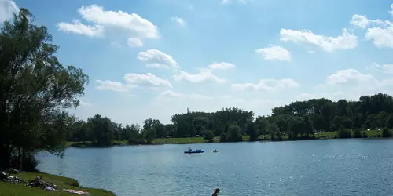

Bewegt im Park: Wann und Wo?
Montags 18.30 – 19.30 Uhr
Los geht's am 14. Juni (bis 30. August 2021)
Große Wiese am Pleschingersee (nähe Spielplatz)
Bewegt im Park
Ultimate Frisbee und Spaß
Ultimate Frisbee in der Stahlstadt Linz.
Trainier mit uns!
Die Erde ist eine (Frisbee-)Scheibe
Ultimate (Frisbee) ist ein schneller, körperkontaktloser und attraktiver Teamsport der sowohl konditionell, als auch mental (gespielt wird ohne Schiedsrichter) den Spieler*innen (es wird Mixed gespielt) alles abverlangt. Das Spielfeld gleicht formal dem des American Footballfeldes. Das Ziel ist es, das Hauptspielfeld durch Zupassen der Scheibe zu überbrücken (ohne mit der Scheibe zu laufen), um dann so in die Endzone zu werfen zu können, dass ein Mitspieler der eigenen Mannschaft diese in der Endzone fangen kann.
Klingt einfach? Ist es auch. Mit etwas Übung kann es jede*r erlernen.
Mehr Informationen zu Ultimate Frisbee in Österreich gibt es auf der Seite des Landesverbandes (OÖLVFS).
Die Teilnahme am Training als Vereinsmitglied sowie über den USI der JKU Linz möglich. Ihr könnt natürlich auch gern zum Schnuppertraining vorbei schauen! Um der aktuellen Corona-Situation gerecht zu werden, meldet euch bitte zum Schnuppertraining an!
Die Einheiten enthalten einen Technikteil, bei dem grundlegende Wurftechniken geschult werden, sowie vorbereitende Spiele und Übungen. Im zweiten Teil kann dann das Gelernte im Spiel angewandt werden.
Montags 18.30 – 19.30 Uhr
Los geht's am 14. Juni (bis 30. August 2021)
Große Wiese am Pleschingersee (nähe Spielplatz)
Bewegt im Park

Derzeit findet kein USI-Training statt.
Ab Wintersemester 2021/22 werden wir wieder einen Kurs anbieten.
Sport-/Laufbekleidung (der Jahreszeit entsprechend), sowie etwas zum Trinken.
Vorkenntnisse sind keine erforderlich, dafür aber viel Motivation!
Das Training findet im Freien statt, d.h. für genügend Frischluft ist gesorgt. Die Scheiben werden regelmäßig desinfiziert und Händedesinfektionsmittel liegt bereit. Bitte bringt zum Training einen aktuellen negativen Corona-Test mit.
Wir haben uns 2020 gegründet und (seit es die Corona-Regeln erlauben) traininieren wir nun regelmäßig.
Du hast Gefallen an Ultimate Frisbee gefunden und möchtest dem Verein beitreten? Super! Sprich uns gern während des Trainings an oder schreib uns auf Discord.
Die Erde ist eine Kugel und bewegt sich auf einer Ellipse um die Sonne. Der Vereinsname soll unsere Liebe zum Sport ausdrücken; wir haben kein Interesse daran Verschwörungstheorien Vorschub zu leisten. (Aber wie cool wäre es bitte, wenn jemand „Flat Earth Society“ im Internet sucht und statt dem Unsinn unseren Verein findet?)
Bei Fragen könnt ihr euch gern via Discord melden oder ihr schreibt uns eine E-Mail.
ASKÖ Discsportverein Flat Earth Society Linz (Link zum ASKÖ OÖ)
Der Verein ist Mitglied des ASKÖ.